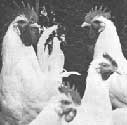
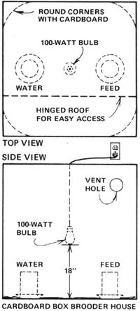

Reader Ron Spomer has the "inside line" on how you can get a regular supply of. ..
While on a trip to the local garbage dump to gather leaf mulch (conveniently prepackaged in plastic bags), my friend Tom and I discovered a yellow heap of dead chicks lying near an air-befouling incinerator.
In answer to my shocked questions, Tom explained to me that the local hatchery often dumped its "worthless" rooster chicks there ... birds that-since they couldn't produce eggs-"nobody wanted".
Well, that pile of dead birds set my brain to working, so later that afternoon Tom and I drove to the hatchery and told the dealer that we'd be glad to take a batch of those doomed roosters off his hands. The gentleman was most agreeable, and we left with instructions to pick up our gratis fowl on the following Friday. Our great chicken-raising adventure had begun!
While we awaited the appointed day, Tom and I prepared a home for our expected babies. First, we secured a large fiberboard box (the size that washing machines and refrigerators are shipped in) from a friendly appliance man and placed it on its side in our garage. The inside corners were rounded out with sheets of cardboard (to keep the chicks from bunchin' up and squashin' each other) and-for a heat source- we hung a 100-watt light bulb 18 inches above the "floor" of the makeshift brooder.
With this low-cost housing completed, it was time to move in the "furniture". A coffee can, placed upside down in a "throwaway" aluminum pie plate, was dubbed a feeder. Another pair of the same items-with the addition of two sticks glued to the inner surface of the pan-worked as a "waterer". (The sticks held the coffee can a quarter-inch above the pan's bottom and allowed the water to rise to that height.) Of course, we could've purchased small feeders or waterers for under a dollar from the hardware store, but this was a low-buck operation.
We had no ground corncobs, cut straw, or wood chips for floor litter, so we just lined the bottom of the brooder with several layers of newspaper and hoped for the best.
The rest of our "waiting period" was spent in a search for information. The neighboring farmers' wives who raised chickens were all pessimistic: Our "brooder" wouldn't be warm enough, we were told . . . the chicks would get diseases and die. It was all quite depressing.
Nevertheless, both Tom and I were very excited when Friday finally arrived, and we hurried to the hatchery for our formal introduction to 75 yellow puffs of down. I would've sworn that the small box we carried home couldn't hold 75 chicks, but we counted 78 when we put our foundlings into their new home.
What a racket the little critters made! Their chorus began in earnest every time anyone opened the "roof". So, I cut an "air/peep hole" high on each side of the box ... to allow the condensation to escape, and to let us watch the chicks without setting off a pandemonium of peeping.
The newspapers on the floor had to be changed every three or four days, but-though we still lacked hay or straw to use for litter- we soon learned to strew dried grass, leaves, and even light dirt on top of the paper to absorb the droppings and keep the floor dry. When it was time to freshen up, we simply lifted the newspapers by the corners and put the entire nitrogen-rich mess (yesterday's news and all) into the compost heap.
Our brood was initially fed commercial chicken starter that we purchased at the hatchery as a requested "payment" for the free birds. The contents printed on the bag, however, didn't impress us, so Tom and I found some oats to supplement the starter feed. One longtime chicken raiser assured us the oats would puncture our little birds' crops, but he was wrong ... as were all the other "experts" who forecast disease and death.
After three weeks, we moved all 78 chicks into a spare 3' X 5' building with two south-facing windows. The southern exposure-plus the warm spring nights-allowed us to eliminate the heat bulb in the chickens' new quarters.
By this time, our fledglings were consuming great quantities of both food and drink, so we built two more feeders and another waterer, all of which had to be refilled every 24 hours. Our first casualty occurred along about then. Cause of death: unknown ... but the other 77 were thriving.
Finally, it was time to put the young cocks into our big barn, from which they could sally forth to raid the weed and insect strongholds. That first day, however, saw no brave recruits step from the dim security of their new barracks. Nor did the second. On the third day we resorted to tossing several of the spineless birds out into the sunlight. They fought each other frantically to get back in.
Clearly, something had to be done to bolster our warriors' courage, so we picked some weeds and threw them to the flock. Snap, peck, gulp ... they were gone. We laid some more goodies in the exit hole. They disappeared! We put some just outside the hole. Several white heads jabbed at them. Eventually, we enticed a few of the birds out into the open with the treats, and-from then on-it was "goodbye feed bill"!
It was our assumption that chickens-given free run of our 80 acres- could feed themselves just as wild pheasants did ... and this theory proved correct. We lost nary a bird after that to disease or deprivation (although our two young pups did kill several in a "friendly game of tag").
And, as the birds grew, their range extended. By October, the roosters had grown brave enough to wander 400 yards and more in every direction. Toward evening our various patrols would hike back to the barn to roost, but-at sunup the next morning-they sounded the battle cry and, again, deployed to the far comers of the farm.
As a result of their "foraged" diet of vegetation, weed seeds, and insects, our chickens grew the deepest-red combs and wattles we'd ever seen. Their tail plumes rose in crisp arcs and waved proudly at the rear guard. Their -long neck hackles draped them in vanity, while they strutted with heads high, challenging all comers.
Since this proud company could lay no eggs to earn their keep, they had to pay their way with meat on the table ... and we began to thin their ranks. Several,, roosters had already become delicious. spring fryers, and the others were soon sold, given to friends, or wrapped for the freezer.
One salty old farm wife, who had raised chickens most of her life, said we had the healthiest fowls she'd ever seen. And my aunt-a farmer for some 70-odd years-butchered a few of our roosters and declared them so pretty, proud, and meaty that she "almost couldn't kill 'em". Best of all, their taste and tenderness would've turned Colonel Sanders' beard green with envy.
After raising three flocks of these free-roamin' birds, I have to say that they're the easiest and most economical meat-growing enterprise possible. The only cash spent in bringin' up those first orphans went for the four bags of commercial starter feed from the hatchery, the 100-watt bulb that heated our brooder, and, of course, electricity.
And the hatchery that supplies us is only one of thousands across the country that have excess cockerels which must be destroyed each week of the hatching season. Any one of these outfits is a probable source of no-cost chicks to fill your freezer later.
Not only that, but you might even pick up a few layin' hens along the way. No one can sex every chick correctly, and a group of 75 alleged cocks will usually contain some pullets. Our first flock had four females ... our second, five.
Just one last word: If you do elect to raise some "free chickens", be sure you're willing to wake up every morning to a crowing chorus of the healthiest, rowdiest roosters around!
|
 |
 |
|